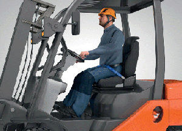

Fahrersitze von Erdbaumaschinen müssen einstellbar sein und so gestaltet, gefedert und gedämpft sein, dass Gesundheitsschäden durch Erschütterungen vermieden werden.
Ebene Fahrbahnen führen zu geringeren Schwingungsbelastungen, d. h. auf Baustellen sollten Fahrbahnen regelmäßig eingeebnet werden. Bei Maschinen mit hohen Schwingungskennwerten kann durch Verringerung der Einsatzzeiten oder durch häufige Arbeitspausen die Belastung des Einzelnen gemindert werden.